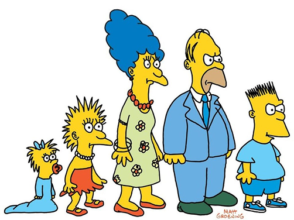
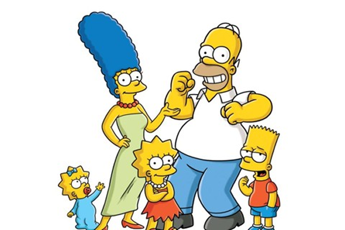

Sobre nós
A Comunidade de Springfield é um lugar que reúne as melhores pessoas do mundo: os fãs dos
Simpsons!
Percorra o website e descubra mais sobre esse universo amarelo, conheça os personagens
que marcaram gerações, a história por trás da série e os lugares mais icônicos de Springfield!
Origem
Os Simpsons tiveram origem em 1985, quando o cartunista Matt Groening foi convidado por James L. Brooks para criar uma família divertida para uma série de curtas animados. Ele desenhou os personagens rapidamente, inspirando-se em sua própria família: Homer, Marge, Lisa e Maggie receberam nomes baseados em seus parentes, enquanto Bart foi uma criação original, representando uma versão rebelde de si mesmo. A família estreou no programa The Tracey Ullman Show em 1987, e o sucesso dos curtas levou a Fox a lançar a série própria em 1989, com o episódio especial de Natal Simpsons Roasting on an Open Fire. A partir daí, Os Simpsons se tornaram um fenômeno cultural, conhecidos por seu humor ácido, críticas sociais e reflexões sobre o cotidiano da classe média americana.

